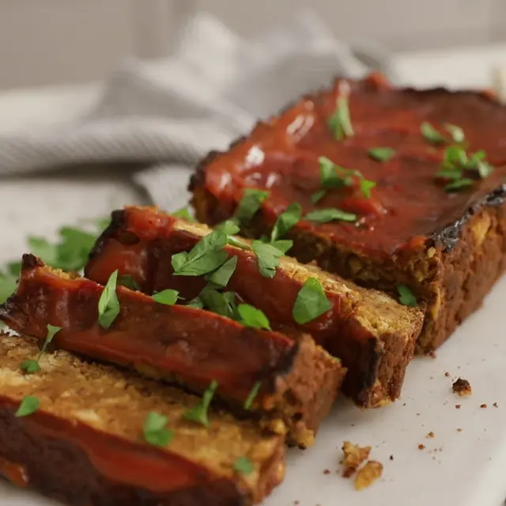

Vegan Chicken Meatloaf
Description
Try this chickpea-based vegan loaf as a delicious plant-based meal for Meatless Monday!
Ingredients
- nonstick cooking spray
- 2 cans garbanzo beans
- 1/3 cup unsweetened almond milk
- 2 tablespoons ground flaxseeds
- 2 tablespoons ketchup
- 2 tablespoons tamari (or soy sauce)
- 2 tablespoons vegan Worcestershire sauce
- 1/4 teaspoon garlic powder
- 1/2 teaspoon onion powder
- 1/4 teaspoon dried oregano
- 1/4 teaspoon black pepper
- 1 dash cayenne
- 1 tablespoo ketchup
- 2 tablespoons ketchup

- Preheat oven to 375°F . Spray a 9x5-inch loaf pan with nonstick cooking spray.
- Place garbanzo beans, panko, almond milk, flaxseeds, ketchup, tamari, Worcestershire, and spices in the bowl of a food processor. Pulse 5-8 times , until ingredients are combined and beans reach the texture of rice.
- Transfer mixture to prepared loaf pan and smooth the top with a rubber spatula so it is even. Spread ketchup over the top of the loaf.
- Bake loaf for 45 minutes on the middle rack of oven.
- Open oven and spread more ketchup over the top. Continue baking for 15-20 minutes , until the ketchup is darkened and matte, and the loaf is browned at the edges.
- Check to see that chickpea loaf is done. Remove from oven or add time as needed.
- Allow loaf to rest for 15-20 minutes before serving.